Bem-vindo!!!
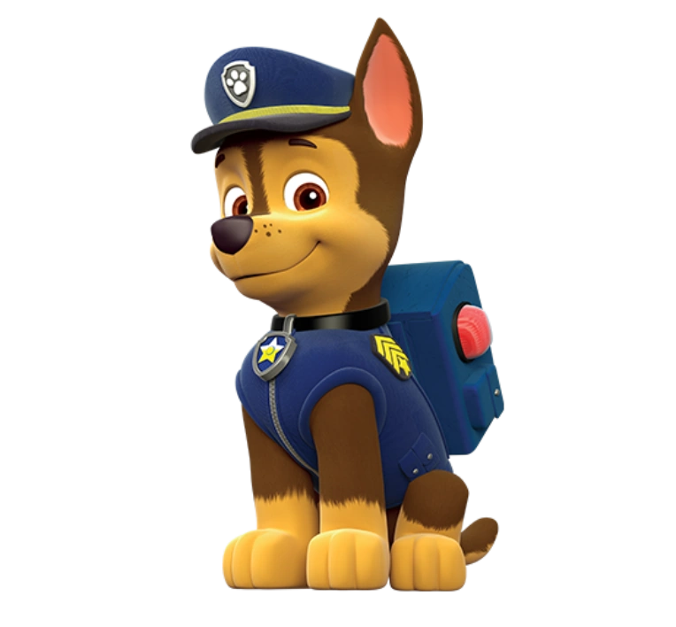
Chase
Policial da equipe, corajoso e protege a sociedade.
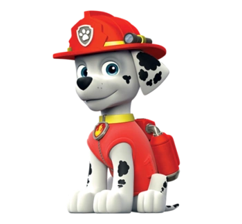
Marshall
Bombeiro da equipe, sempre pronto para salvar vidas.
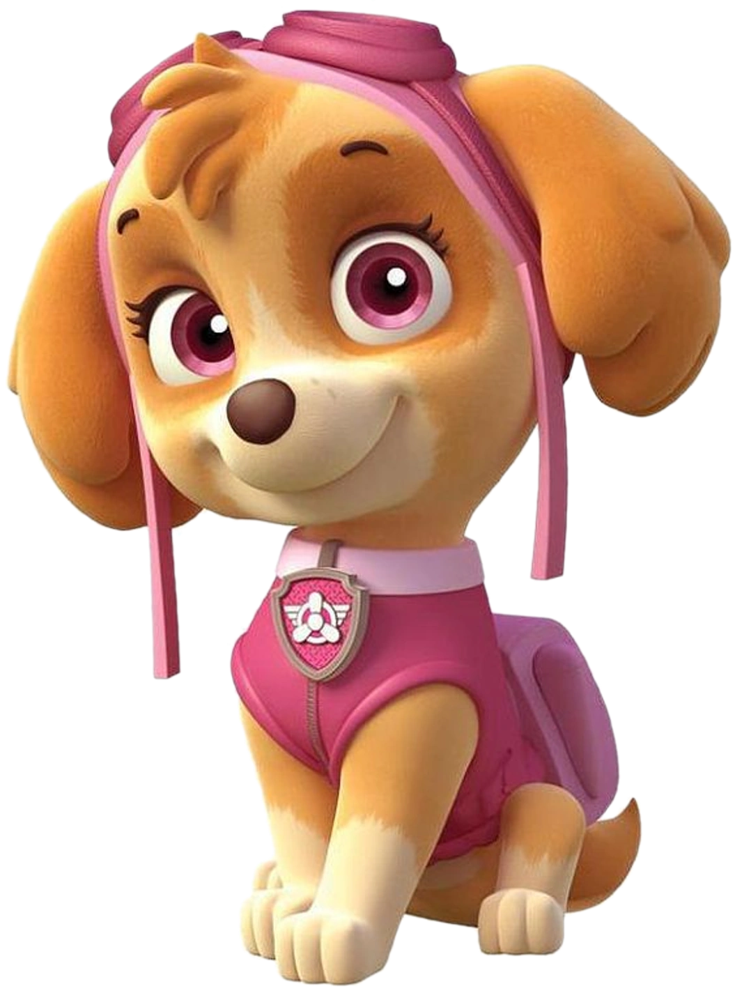
Skye
Observadora da equipe, com habilidades de detetive e rastreio.
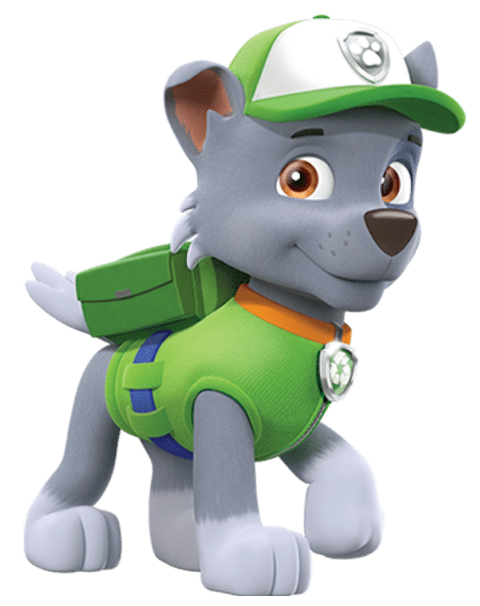
Rocky
Mecânico da equipe, especialista em resolver problemas técnicos.
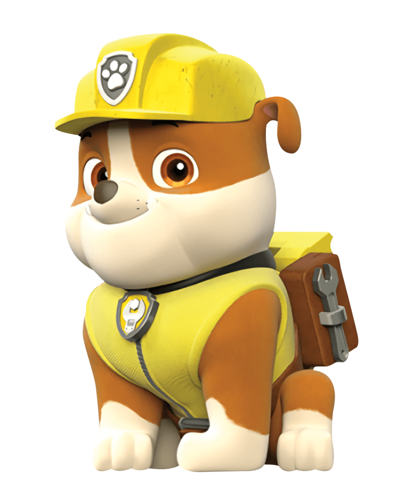
Rouble
Engenheiro da equipe, sempre pronto para construir e consertar.
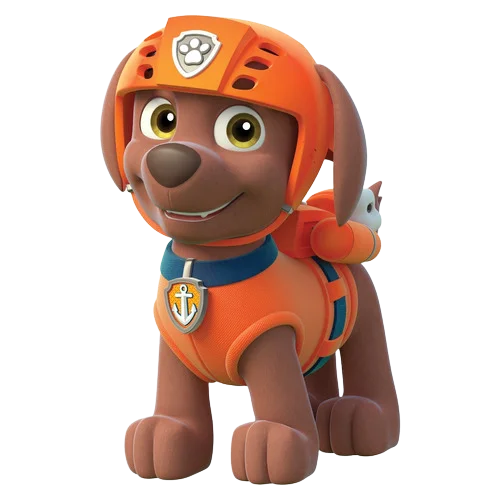
Zuma
Especialista em resgates aquáticos, sempre pronto para salvar vidas na água.
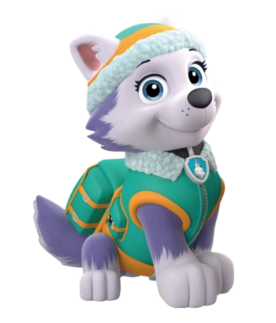
Everest
Atleta da equipe, sempre pronta para competir e vencer.
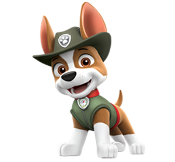
Tracker
Especialista em rastreio, sempre pronto para encontrar pistas.
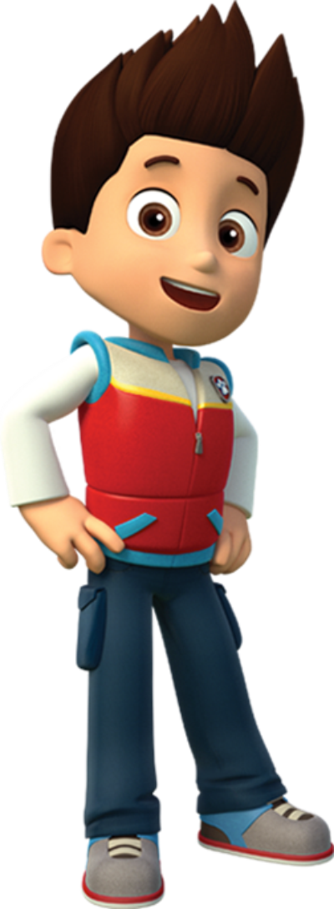
Ryder
Líder da equipe, sempre pronto para coordenar missões e inspirar os outros.
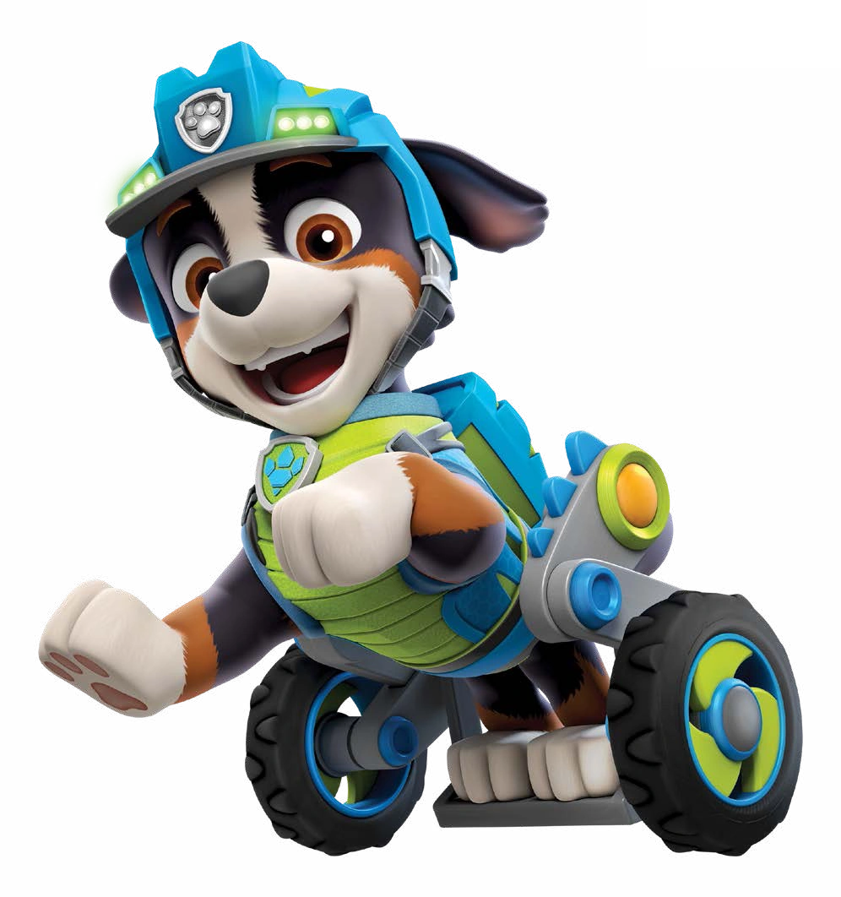
Rex
Corajoso e inteligente, especialista em missões com dinossauros.
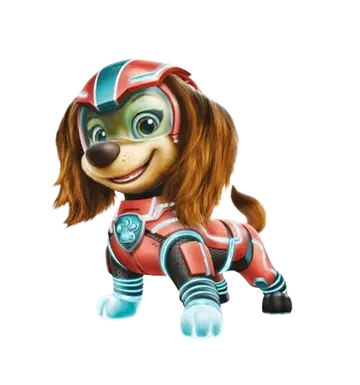
Liberty
Esperta e corajosa da Patrulha Canina, especialista em ajudar nas missões pela cidade.
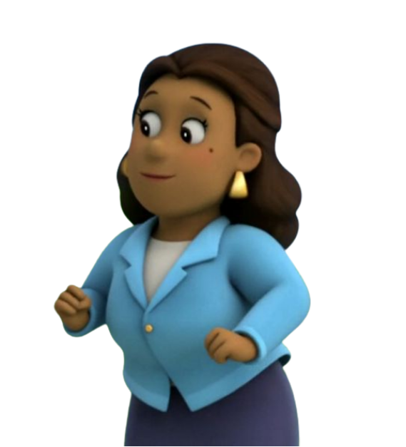
Prefeita Goodway
A Prefeita Goodway é simpática e dedicada, sempre cuidando de Adventure Bay